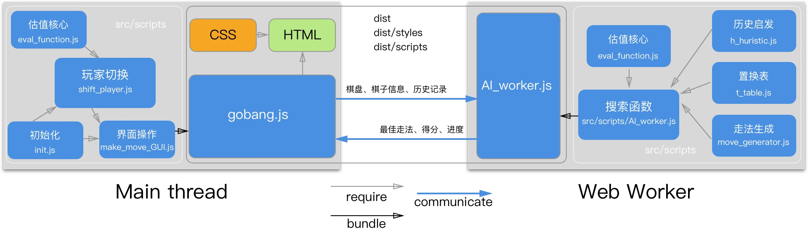

INTRO
欢迎来到我的个人网站，请随意逛逛。
喜欢新事物，乐于探索；有时发呆，偶尔做白日梦。
翻翻书，开开脑洞，打打字，敲敲代码，我在这里分享。
PROGRAMMER
欢迎来到我的个人网站，请随意逛逛。
喜欢新事物，乐于探索；有时发呆，偶尔做白日梦。
翻翻书，开开脑洞，打打字，敲敲代码，我在这里分享。
JavaScript/Sass/HTML | 模块化 | 剪枝/历史启发/置换表 | Gulp/Webpack/Babel
一个带有基本行棋能力AI的网页版五子棋，考虑到应用规模，采用了面向对象和模块化技术；博弈AI使用了基本的空窗搜索+历史启发+置换表提升效率。
谁不想蹭蹭人工智能的热点呢？开个玩笑。而我的AI或许还达不到AI的程度，也许只能叫，不，不是PS，是AF(Artificial Fool)。
言归正传，说直白些，这仅是个稍复杂的练手项目。
首先要学习基本的棋类游戏博弈技术。我对计算机科学并不能说有基础，因此在这之前棋盘的数据结构、走法生成到各种搜索技术和评估函数，都要从更基础的地方开始了解，比如深度搜索，比如有向图。当然这其中也不乏一些很有意思也带有普遍启发意义的技术，例如很多搜索核心都需要使用置换表，置换表的核心思想是用空间（内存空间）换时间（CPU计算时间），这种将计算代价很高的结果缓存起来的做法还是很常见的，我甚至还见过一段用闭包封装起来的有点儿"疯狂"的代码：
Function.prototype.memorized = function(key) {
this._value = this._values || {};
return this._value[key] !== undefined ?
this._values[key] = this.apply(this.argument);
}
Function.prototype.memorize = function() {
var fn = this;
return function(){
return fn.memorized.apply( fn, arguments );
}
}
var isPrime = (function(num) {
var prime = num != 1;
for (var i= 2; i < num; i++) {
if (num % i == 0) {
prime = false;
break;
}
}
return prime;
}).memorize();
以上是《JavaScript忍者秘籍》中的一个例子，虽然这本书后面好像有点儿乏味没看完，而且书上的技巧也没记住几个，但作者（他还是jquery的作者）在函数部分的代码令人印象深刻，每每提及闭包、模拟重载之类我总会想起它。
回到正题，置换表很大程度上避免了对相同局面的重复评估，很自然地，难点在于找到尽可能独特的键映射相应的局面。这又引出了另一个非常巧妙的方法，叫Zobrist hashing（我总想到动物园）：往棋盘的每个位置上都填满对应每种棋子的随机数，把有棋子的位置对应该棋子的随机数加起来，就是该棋盘的键（还有相应的手段避免冲突，有兴趣可以查看链接）。

但凡不能写在一个文件里的项目，写出意面式纠缠的代码都是不可接受的。考虑到这是一个游戏程序，模块结构比较明显，因此面向对象成为首选（其实到现在我也没写过函数式，倒是写过不少面条代码和回调金字塔）。除了类，模块的引入是更为重要的，变量污染的问题被一劳永逸地解决了，更重要的是松散耦合，因为模块导出的值是不能进行赋值操作的，模块间的独立性也得到了保证。说一个谎就要说更多的谎去圆它，引入了新技术（其实一点也不新），就需要引入更多的依赖，Gulp、Webpack、Babel这样的工具也就被引进了项目，然后，就是npm，不过这些都是流程化的东西，没什么可说的。
Web Worker是一个比模块还要神奇的HTML5 API。因为JS在浏览器上和UI渲染共享一个线程，因此在通常JS代码运行中，UI渲染是被阻塞的。这本不是什么问题，因为网页中的脚本业务逻辑一般都比较简单，但在这个项目里这个问题被最大化了。单单阻塞其实也算容易解决——强制异步（例如套一个计时器）即可，但虽然异步是必须的，仅有异步却远远不够——阻塞并没有消失。HTML5之前采用的做法是将大块的运算逻辑分开，分别套在计时器里。问题没有从根本上解决不说，无疑还很不优雅。而且我还想添加一个新功能——在 AI计算时，浏览器实时显示计算进度，这更是雪上加霜。好在现在问题变得简单，原因就是有了Web Worker。Web Worker其实和事件回调有些类似，不过Web Worker 不能操作DOM，就像厨师不能端着菜上桌一样，他们只管点餐机上的任务。
至此，业务逻辑基本完善。剩下的适配移动端的一些媒体查询和界面改变在打开项目时都能看出来，不再展开。
考虑通过React Native迁移成移动应用，或者做成微信小程序，正好我一直都对移动app蠢蠢欲动，就差没去学Swift了。
完
JavaScript/Sass/HTML | Nginx/Node.js/反向代理 | 模块化 | Gulp/Webpack/Babel
即本页面，除简介和联系方式外，目前有“项目展示”以及“学习心得”两个板块，预计后续添加原创以及影像模块。技术方面，以屏幕宽度768px为阈值大致分为桌面端、移动端两种版式；依托腾讯云主机，采用Nginx 为静态服务器，其他请求反向代理给Node.js 处理；通过301永久迁移实现全站HTTPS 连接。目前服务器在香港。
v1.1 更新
初版的网页上线后，给UI设计的朋友看了看，朋友提出了改进布局的建议，帮我重新做了设计，因此此次更新主要是界面上的
原来的网页结构是一拉到底的瀑布流，现在将几个二级板块分开展示（PC端三级展示）。
结构的复杂化无疑会引入更多的问题。
一是切换动画在一些浏览器上出现了卡顿，为此，将所有页面变动都交由CSS完成，并且尽量只使用translate、scale、rotate和opacity。另外引入3d属性开启硬件加速，也去掉了部分无意义的动画。
二是移动端的单位选用问题，因为使用的是宽度为640px的设计稿，因此如果使用像素为单位直接除以2即可。但如果用户自定义字号这样似乎不太灵活，考虑再三使用rem作为单位，同时根据视口宽度适当调整根字号。当然使用相对视口的单位vh、vw、vmin等似乎更为灵活，但这样会增加换算上的复杂度，同时数值之间彼此独立也不利于调整（使用Sass或者Less可以改善这一问题）
三也是因为结构复杂了一些需要更注意跨浏览器的呈现。桌面端使用虚拟机测试了Windows下的IE11、IE10(模拟)、Edge、Chrome。移动端Safari可以直接连电脑开Safari调试，安卓UC使用了开发者版本配合Chrome的inspect调试，目前测试过的浏览器包括iOS平台上的Safari、微信浏览器和安卓平台上的Chrome、微信浏览器、UC、QQ和360浏览器。
因为还没有备案所以目前还是使用香港的主机，计划备案后迁移到广州。
v1.0
本来没有计划要做一个自己的网站，但由于五子棋写出来后在腾讯云买了域名，觉得有域名没有主页不太像话，于是就展开了新的探索（瞎折腾）。
首先是技术选型，在通信方面，最开始相中的是WebSocket框架socket.io。相比年迈的Ajax的问答式交流，全双工的WebSocket 无疑更有吸引力。但是在阅读了一遍socket.io的文档后，我发现强化对Node.js(后文简称 node) 的理解才是当务之急，第一个涉及服务端的个人项目就使用框架虽然容易出成果，但不免流于表面。
在阅读了几个比较基本的模块文档后，权衡效率，结合网站的需求（一个天气信息请求，一个读书笔记文件大小请求），确定了服务端在前方架设 nginx 作为静态服务器，并扮演node的反向代理。路由分发暂时使用URL结合请求方法（目前两个都是'GET'）的方式，尽量遵循RESTful 原则分离前后端状态。附带的好处是站内的AJAX请求即使有两个服务器也只使用同样的socket，不会出现跨域了。天气请求使用的是心知天气的API，虽然是免费服务，但有频率限制，所以在服务端发送请求避免暴露密匙。城市识别是依据客户端IP，准确度虽然没有GPS好，而且我有 HTTPS也可以请求获取地理信息，但是考虑到弹出窗口请求地理信息对用户不太友好，这不是网站的主要功能，还是退而求其次
使用静态服务器作为反向代理负载均衡是普遍做法，虽然我的网站目前无论怎样架设都不会有任何负载上的压力，但我写 node 程序的水平有限，有静态服务器在前即使node偶尔奔溃了，也至少能返回404。当然，我并不想让node崩溃，所以在关注逻辑的同时结合了PM2 进程管理工具。
另一方面，一开始我就确定要使用HTTPS，虽然网站暂时不涉及隐私，但HTTPS 是大势所趋，不使用安全连接说不定有一天网页会被浏览器限制，甚至 APP 被应用市场限制。原本打算做自签名证书，但腾讯送了一年证书，就省了一个步骤。余下只要更改Nginx的配置，再设定301跳转就好（让访客手输HTTPS或者443不现实，不设置的话HTTPS形同虚设），不再赘述。
至此服务端就基本上完成了，感觉只能算是对 node 有了表面上的认识，不过有了操作经验，再看文档的认识会更深刻。
网站初起，需要缓慢地迭代，目前的客户端逻辑非常直白。自己简单封装了一个AJAX类再将DOM操作封装了一个类，加了几个监听器就结束了。因为和服务端约定好了接口，所以预计扩展起来比较方便。但想必在请求很多的情况下无法像现在这样使用静态路由，考虑的方法是将来换成正则筛选。而且当下仅有两张图片加起来不到200KB，本来想娱乐一下懒加载，发现也没有必要多一次AJAX。
当然虽然逻辑简单，麻烦却不会少，比如现在打开的这个文章，是通过点击事件改编高度实现的，但打开没有问题，点击下方按钮收起的时候由于已经下滑了一段距离，如果不加一个滚动事件返回，收起后原来屏幕正中的内容就会显得偏离了（或许有更好的方法？如果你知道一定要告诉我）。又例如视口宽度小于768px 时的导航菜单打开按钮，用了四个span叠在一起才实现旋转打开（没错，就是Apple首页带的坏头），不知这种为了外观牺牲HTML结构语义性的动画是否值得，毕竟即使是CSS 动画也会浪费性能，但就是好看啊，所以我还是保留了。以及在安卓UC 浏览器上打开时JS全部失效的怪事，后来发现是少给Babel装了一个插件，Array.from() 方法没有被编译……UC的兼容性还比不上微信自带的浏览器。不过 Edge 不能对DOM元素组使用forEach倒是可以理解，我反思了一下这样对性能或许不太友好。
网站的下一步是增加一个主观性更强专开脑洞的文字板块，以及一个图文板块。评论区和会员注册似乎没有必要，自娱自乐就好。
完
JavaScript/Sass/HTML
一个可以自动切换休息时间和工作时间，并可定制休息和工作时长的Web App。本应用主要是jQuery中动画事件池的简单模拟。
这个项目是Free Code Camp前端高阶项目中的一个,要求并不高，要实现倒计时还是比较简单的。但因为那时读了一点jQuery 源码，对其中动画模块将所有动画对象推进一个队列（动画事件池，其实浏览器主进程和Node.js也采用了事件池）很着迷，于是这里面的所有动画也用原生JS实现了一遍。虽然功能上都没有问题，但是代码风格比较原始，用一个自执行匿名函数封装成单独模块，里面再没有什么层次。
JavaScript/Sass/HTML
一个可以连续运算的JS计算器，高度模拟Mac计算器，可响应键盘，位数超过屏幕容纳范围时自动缩小字体
计算器算是一些框架"Hello world"级别的练手项目，对原生JS和CSS来说难度稍有增加但仍属非常简单的范畴。主要的业务逻辑难点在于区分连续运算（比如：3+5-6+8，也就是一直不按等号，或者区分按了等号后马上按运算符和数字）和分词运算；另外还需要优化小数精度，因为JS是二进制精度小数，所以会有误差，处理手段是只要出现小数就转换成整数再做运算。
这是我第一个稍有业务逻辑的练手项目，也是第一次先写sass再编译。
《You Don’t Know JS》是一系列对JavaScript介绍得非常细致入微的书，事实上，这套书是我断断续续读完的，也没有按照作者列出的顺序。对我个人来说帮助最大的是 《Types & Grammar》 和 《Async & Performance》，其中异步那本书从头到尾构建了我对异步的理解。当然在读这系列书的同时我也发现不管哪一位作者，无论他是否致力于客观，文字里不可避免会带有个人倾向。
这本书完全是为了弥补基础知识看的，惭愧地说，草草看了一遍，并不怎么深入，只能说挖了个坑。准备在详细学习一遍《深入理解计算机系统》（看完估计要很久）后再补网络知识，应该会有不同的认识。
当时准备写五子棋项目，因为初次面对稍微复杂的设计，有点心慌，就看了这本书。事实上还是看早了，因为没有写过大一点的项目，很多概念都理解得不够深刻。设计模式是面对需求而生的，在需求面前，模式的意图才能显现。
确切地说，这是官方文档部分模块的抽象，给字母表顺序的API划分了下层次，方便理解，也标出了一些我当时觉得重要而且能理解的东西，事实上，所有的笔记都是这样的。